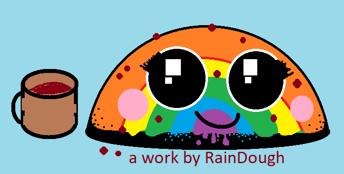

<p>We are a father and 2-daughter team who make educational games for kids.</p>
<h3>Works:</h3>
<ul>
 <li><a href="https://countable.github.io/toddler-keyboard/">Toddler Keyboard</a> - Ages 1-3. Mashing keys shows corresponding animals.</li>
 <li><a href="https://countable.github.io/cats-of-jasnah/">Cats of Jasnah</a> - Ages 3-8. Teaches counting and logic.</li>
 <li><a href="https://countable.github.io/equation-dragon/">Equation dragon</a> - Ages 5-10. Teaches equations.</li>
</ul
  <h3>Unfinished work:</h3>
<ul>

 <li><a href="https://countable.github.io/jasnahs-maze/">Jasnah's Maze</a> - Ages 4+. *A work in progress* maze game.</li>

</ul>
